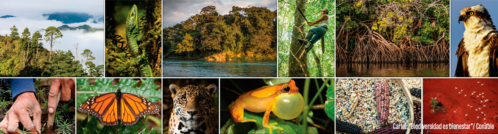

La biodiversidad o diversidad biológica es la variedad de la vida. Este reciente concepto incluye varios niveles de la organización biológica. Abarca a la diversidad de especies de plantas, animales, hongos y microorganismos que viven en un espacio determinado, a su variabilidad genética, a los ecosistemas de los cuales forman parte estas especies y a los paisajes o regiones en donde se ubican los ecosistemas. También incluye los procesos ecológicos y evolutivos que se dan a nivel de genes, especies, ecosistemas y paisajes.

El concepto fue acuñado en 1985, en el Foro Nacional sobre la Diversidad Biológica de Estados Unidos. Edward O. Wilson (1929 - ), entomólogo de la Universidad de Harvard y prolífico escritor sobre el tema de conservación, quien tituló la publicación de los resultados del foro en 1988 como “biodiversidad”.
Los seres humanos hemos aprovechado la variabilidad genética y “domesticado” por medio de la selección artificial a varias especies; al hacerlo hemos creado una multitud de razas de maíces, frijoles, calabazas, chiles, caballos, vacas, borregos y de muchas otras especies. Las variedades de especies domésticas, los procesos empleados para crearlas y las tradiciones orales que las mantienen son parte de la biodiversidad cultural.
En cada uno de los niveles, desde genes hasta paisaje o región, podemos reconocer tres atributos: composición, estructura y función.
La composición es la identidad y variedad de los elementos (incluye qué especies están presentes y cuántas hay), la estructura es la organización física o el patrón del sistema (incluye abundancia relativa de las especies, abundancia relativa de los ecosistemas, grado de conectividad, etc.) y la función son los procesos ecológicos y evolutivos (incluye a la depredación, competencia, parasitismo, dispersión, polinización, simbiosis, ciclo de nutrientes, perturbaciones naturales, etc.).